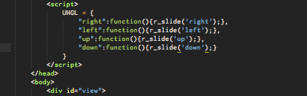
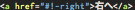

このjsはパネルに縦スライドと横スライドを実装したものです。
デモでは画面全体が動きますが、設定次第では横幅、縦幅は変更可能です。
右下のマップと矢印、hrefによるページスライド、マウスホイールでの縦スライドなどが実装済みです。
(注意：pageの高さがウィンドウのサイズを超えると、マウスホイールでの縦スライドはそのページだけ無効になります。)
jQueryのversion1.11以降。これを作ったときは jQuery v1.11.2。
必須ではないが、jquery.easingプラグインがあるとアニメーションをカスタマイズしやすくなります。
更新情報はこっち：最終更新2015/1/19/21:20
AutoSlide.jsについてはこちら
UsefulHash.jsについてはこちら
UsefulHash.jsを使うことで、ページのidで遷移できるようになりました!!情報はこちら
上のようにjsを読み込み、id,classを追加。viewが全体の画面、column-wrapperが縦移動、row-wrapperが横移動を行って、.pageの中身が見れるという仕組み
実際の動きを見てみる
*詳しい使い方
SLGL.(option) = value;
とする。
基本的には onClick属性に onClick="function('value',…)"のかたちで入れる。
classに jump を追加し href属性に #page-0-1 のようにページ座標を追加することで、onClickを使わなくてもスライドできる。
これの利点として、aタグに jump クラス を追加した場合、URLを変化させずにすむ。
逆に、aタグのみ、href属性にページ座標を #page-2-0 といったように追加するだけで、URLが書きかわるためにページ遷移は行える。
2014/12/27 :右下のMAPに、自動でtitle属性を付与できるようにした。class="page" に title属性 を指定するか, そのコンテンツ内に h1 タグを使ったものを作るとそれが title属性 として付与される。
これによって、右下のMapにカーソルを重ねたとき、一定時間経つとリンク先のタイトルがわかるようになった。
2014/12/27 :フリックによる横移動を実装。が、使い勝手が微妙でどうしようか迷う。一応、SLGL.FlickOn を true にすることで動く。*現在停止中
2014/12/28 :PanelSlider.js の機能を拡張するjs, jquery.PanelSlider.AutoSlide.jsを追加。bodyタグの直前に scriptタグを設置。その中か、aタグなどの要素の onClickに StartAS(array,interval)を打ち込んでやれば動く。
StopAS() を実行すれば止まる。また、画面のどこか(正確には#view)をクリックしても止まる。
＊再開はしない。
＊二重実行はできない。
arrayにはスライドさせるページのリストを座標で入れ、intervalにはスライドの時間間隔をmsで指定。
例) StartAS(["0-0","0-1","0-2","1-0"],2000); ← クリックで実行。
2014/12/28 :jquery.PanelSlider.AutoSlide.js を更新。行の選択ができるようになった。(1行だけ。)
StartAS(["row-1"],2000);
また、クリックでAutoSlideを実行させると同時に止まってしまう不具合を、クラスにjPSASと指定することで回避できるようにした。
2014/12/28 :アドオンである AutoSlide.js を大幅更新。詳しくはこっち
2014/12/29 :Downloadできるようになった。また、色々なバグを修正。
2014/12/29 :アドオン、UsefulHash.jsを追加しました。htmlのコーディングがやりやすくなるんじゃないかな？
2015/01/03 :PanelSlider.jsを更新。矢印キーでページ遷移できるようになった。これを使うとマウスホイールで移動できないページでも移動できる。
2015/01/19 :PanelSlider.jsを色々更新。とりあえず、SLGL.SlideEffect="0" が通常のスライド(斜め移動)。"1"にすると、(見かけ上)縦と横移動のみ。
例) SLGL.SlideEffect="0" SLGL.SlideEffect="1" 左をクリックすると、パラメータが変更された上でAutoSlideが始まります。
更新予定
scrollableによってマウスホイールが効かないページ要素において、一定条件の下にホイールイベントを起こす方法。(使い勝手悪そうならなくす。)
ホイールによる横遷移の追加。
AutoSlide.jsの AllSlide関数で、開始位置を指定できるようにする。
PanelSlider.js の機能を拡張するjs
下の関数を実行することで自動でパネルをスライドさせることができる。
このjsを読み込むのは, jquery と jquery.PanelSlider.js を読み込んだ後。
・StartAS( [array], interval, easing )
デフォルトの実行。arrayに指定したページを、interval秒ごとに easingに指定した効果で最初から順番にスライドする。
arrayには "row-(数字)" "column-(数字)" "(数字)-(数字)"が指定できる。
"row-(数字)"と指定すると、指定した数字の行のページがスライドされる(横移動)。 例)StartAS(['row-1'],2000)
"column-(数字)"と指定すると、指定した数字番目の列がスライドされる(縦移動)。例)StartAS(['column-0'],2000)
"(数字)-(数字)"にはページの座標。例) StartAS(["0-0","0-1","0-2","1-0"],2000);
これらは組み合わせて指定もできる。例) StartAS(["1-2","row-1","column-0"],2000);
・AllSlide( direction, interval, easing, AllSFA )
directionには垂直 "vertical" か平行 "parallel"を指定。
interval,easingはStartAS()と同じ。
AllSFA (AllSlideFromActive) は、trueにすると現在のページからスライドが開始され、falseにすると.page-0-0からスライドが開始する。
例) AllSlide('vertical',2000,'',false) 例)AllSlide('parallel',2000,'',true)
このjsの、指定可能な変数は→
ここにかかれている変数は、このjsを読み込んだ後の scriptタグにて変更可能。すでに入っているのは変更しなかった場合のデフォルトの値
・ASGL.Easing = "easeInOutSine";
StartAS関数もしくは AllSlide関数において、easingを " " を用いて省略した場合のデフォルトイージング。
SLGL.Easing を入れてやれば PanelSlider.js でのデフォルトイージングが適用される。
・ASGL.Interval = 2000;
スライドしてから次に移るまでの時間間隔。
・ASGL.AllSFA = true;
AllSlide関数を実行したときのスライドの開始位置を今いる場所にする。falseにすると最初のページ(#page-0-0)からスタートする。
This js extend a tag's href attribute.
このjsはaタグのhref属性の機能を拡張するものです
aタグのhref属性に #!-(変数) と指定することで、変数に代入された関数を実行できるようにするものです。
これによって、絶対座標移動だけでなく、相対座標移動も、href属性を使って実装できるようになります。
・使い方
UHGLのプロパティに下のように関数を追加します。

そして、aタグの href属性に #!-(変数) と指定すると、onClickと同じように動作します。

onClickを多く使いたくないときにどうぞ。
slide() や r_slide() 以外にも使えます。関数を入れてるだけなので、なんでも出来ます。
例)上へ
例)トップへ
＊注意 これをインクルードする場所は、PanelSlider.jsの前です。
クラスにjumpは追加しないでください。